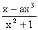
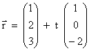
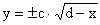
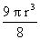
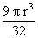
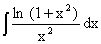
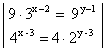

| KANTONSSCHULE REUSSBÜHL | Maturitätsprüfungen 2000 (Be, Es, Ko) |
M a t h e m a t i k Typus A/B
Bemerkungen: Jede Aufgabe soll auf einer neuen Seite begonnen werden.
Zeit: Drei Stunden.
Jede vollständig gelöste Aufgabe wird mit maximal 10 Punkten bewertet.
Für 40 Punkte wird die Note 6 erteilt.
1. Gegeben ist eine Kurvenschar durch die Gleichung y = fa(x) = 
a) Berechnen Sie den Parameterwert a so, dass die zugehörige Kurve an der Stelle x = 1 die Steigung 2 hat.
b) Setzen Sie den Parameterwert a = 1 und diskutieren Sie die Kurve y = f1(x):
Definitionsbereich, Nullstellen, spezielle Symmetrie, Asymptoten, Hoch-, Tief- und Wendepunkte (ohne 3. Ableitung), Skizze (Einheit = 4 Häuschen).
c) Berechnen Sie die Koordinaten derjenigen Punkte des Graphen von f1 aus Aufgabe b), die von der schiefen Asymptote den grössten Abstand haben.
2. Die Wahrscheinlichkeit, dass an einem zufällig gewählten
Tag in einer bestimmten Stadt das Wetter
schön ist, beträgt 0.4 und mit p = 0.6 herrscht schlechtes Wetter. Der
Schüler Pankraz wohnt in dieser Stadt und
fährt täglich mit seinem alten, pannenanfälligen Mofa zur Schule.
Die Wahrscheinlichkeit, dass beim Mofa von Pankraz ein technischer Defekt
auftritt, beträgt an einem Tag mit schönem
Wetter 0.125, bei schlechtem Wetter hingegen 0.25.
Mit welcher Wahrscheinlichkeit erleidet Pankraz mit seinem Mofa
a) bereits am ersten Schultag eine Panne ?
b) in einer Schulwoche (fünf aufeinanderfolgende Tage) höchstens eine Panne ?
c) während einer fünftägigen Schönwetterperiode keine Panne ?
d) Wie gross ist die Wahrscheinlichkeit, dass auch noch gerade schlechtes Wetter herrscht, wenn eine Panne eingetreten ist ?
e) Wenn Pankraz eine Panne hat, kommt er immer auch zu spät zur Schule. Damit schadet er auch dem Ansehen seiner Klasse. Da er aber auf keinen Fall auf sein altes Mofa verzichten kann, will Pankraz seine Klasse entschädigen.
Jeweils am Ende einer fünftägigen Schulwoche zahlt er je nach Anzahl Pannen einen Beitrag in die Klassenkasse. Bei einer Panne innerhalb einer Woche bezahlt er Fr. 1.- , bei zwei Pannen Fr. 3.-, bei drei Pannen Fr. 6.-, bei vier Pannen Fr. 10.- und bei fünf Pannen Fr. 15.-. Eine pannenfreie Woche verursacht natürlich keine Kosten.
Welcher wöchentliche Beitrag in die Klassenkasse ist so zu erwarten ?
3. Gegeben sind die Geraden g = (A(16/-10/-3) P(17/-12/-1) und h: 
a) Wie heisst die Gleichung der Normalebene N zu g durch A ?
b) Berechnen Sie die Koordinaten der Punkte B, C und D so, dass ABCD das kleinste Quadrat in der Ebene N mit einem Eckpunkt auf h ist.
c) Bestimmen Sie einen Punkt E auf g so, dass die Strecke AE gleich lang wie die Diagonale des Quadrates ABCD ist.
d) Wie gross ist der Winkel zwischen den beiden Ebenen (BCE) und (ABC) ?
Hinweis : Die Aufgaben c) und d) können auch vollständig gelöst werden, ohne alle vier Eckpunkte des Quadrates zu kennen.
4. Ein Kreis x2 + y2 = r2 wird in den Punkten ( 0.5r / y1) und ( 0.5r / - y1) von einer Parabel berührt.
a) Die Parabelgleichung hat die Form  . Bestimmen Sie c und d.
Rotieren die Kreisfläche und das von Kreis und Parabel begrenzte sichelförmige Gebiet um die x-Achse, so entsteht ein eiförmiger Körper, dessen Volumen sich aus einem Kugelsegment und einem Rotationsparaboloid zusammensetzt.
b) Zeigen Sie, dass das Kugelsegment das Volumen  hat.
c) Zeigen Sie, dass das Paraboloid das Volumen  hat.
d) Welches Volumen hat so ein Ei, wenn es 6 cm lang ist ?
5. Drei voneinander unabhängige Kurzaufgaben.
a) Für welche x ∈ [ 0 , 2π ] ist der Term 2cos2x + cos x - 1 positiv (Exakte Werte angeben)
b) Berechnen Sie  mittels partieller Integration.
c) Bestimmen Sie die Lösungsmenge des folgenden Gleichungssystems
